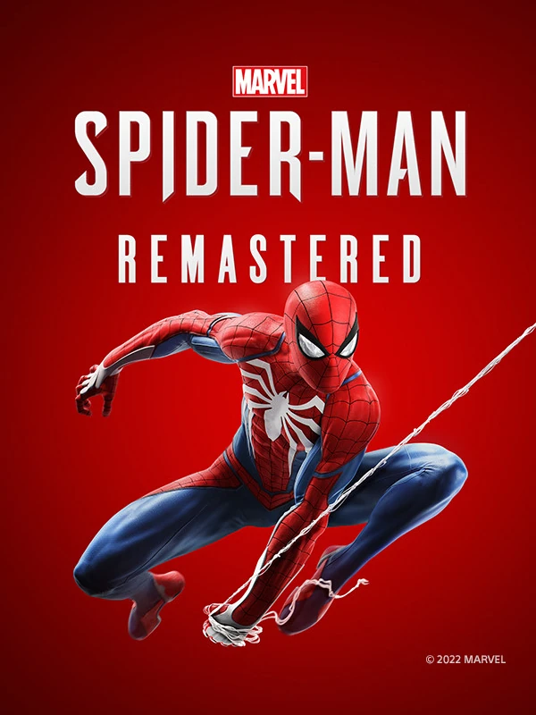

GAMES + DESENVOLVIMENTO
Conheça o
BackLog.
Meu projeto de desenvolvimento web para organizar jogos, escrever reviews e descobrir o que jogar depois.
BACKLOG / PÁGINA INICIAL



Feito para quem jogaConheça o projeto
Meu projeto de desenvolvimento web para organizar jogos, escrever reviews e descobrir o que jogar depois.
